청소년상담사-1급(1교시) (2022-10-08 기출문제)
1과목: 상담사 교육 및 사례지도
1. 수퍼비전의 정의로 옳지 않은 것은?
- Super(위에서)와 Vision(보다)의 조합으로 '감독하다'라는 의미를 갖는다.
- 보딘(E. Bordin)은 연장자가 대인관계 능력을 향상시키려는 목적으로 나이어린 사람을 평가하는 행동이라 말했다.
- 버나드와 굳이어(J. Bernard & R. Goodyear)는 상담분야의 선배가 이 분야의 후배나 미숙한구성원에게 제공하는 일종의 개입이라 했다.
- 길버트와 에번스(M. Gilbert & K. Evans)는 수퍼바이저가 지혜와 전문성을 전수하여 수련생의 상담심리치료를 증진시키는 것이라 했다.
- 홀로웨이(E. Holloway)는 경험 많은 임상가, 감수성이 뛰어난 교사, 뛰어난 전문가의 눈으로 다른 사람의 작업을 감독 및 지도하는 활동이라고 했다.
(정답률: 알수없음)

2. 다음 설명에서 강조하는 수퍼바이저의 역할은?
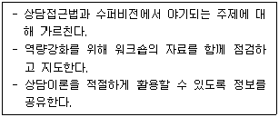
- 교사
- 평가자
- 관리자
- 공명판
- 중재자
(정답률: 알수없음)
3. 수퍼비전에 관한 설명으로 옳지 않은 것은?
- 수퍼비전 관계는 수퍼비전이 진행되면서 변화한다.
- 내담자를 보호하는 것은 수퍼비전의 중요한 목적이다.
- 프로이트(S. Freud)의 수요모임이 수퍼비전의 시발점이라 할 수 있다.
- 수퍼바이저가 평가할 경우에 생산적인 수퍼비전 관계가 이루어지지 않는다.
- 수퍼바이저의 이론적 입장이 수퍼비전의 구체적인 목표에 영향을 줄 수 있다.
(정답률: 알수없음)
4. 고급 상담자의 상담 특징은?
- 내담자에게 의도적으로 주의를 기울이고 중요한 정보를 수집하고 인식할 수 있다.
- 자신과 타인에 대한 감정을 알아차리기 힘들어 불안해한다.
- 내담자를 이해하기 보다는 상담자로서 어떻게 반응해야 하는지를 더 생각한다.
- 내담자와 상담자의 상호관계에 대한 역동을 이해하기 힘들어 한다.
- 상담 회기중에 내담자에게 주의를 기울이기 보다는 자신의 상담수행에 더 신경을 쓴다.
(정답률: 알수없음)
5. 수퍼비전 관련 기록에서 간접적인 방식은?
- 녹화
- 녹음
- 사례보고서
- 직접관찰
- 일방경(one-way mirror)을 통한 관찰
(정답률: 알수없음)
6. 겔소와 헤이즈(C. Gelso & J. Hayes)가 주장하는 수련생의 역전이 관리 필수항목이 아닌것은?
- 자기통찰
- 자기개방
- 공감
- 개념화 능력
- 불안관리 능력
(정답률: 알수없음)
7. 진로상담 수퍼비전에 관한 설명으로 옳지 않은 것은?
- 상담회기에 관한 녹음을 재검토한다.
- 진로에 대한 발달 이론을 토론한다.
- 내담자가 보인 행동에 맞는 이론을 토론한다.
- 사례 개념화를 위해 진로상담 이론을 활용하도록 지도한다.
- 수퍼바이저 단독으로 어떻게 과업을 수행할 지 알려준다.
(정답률: 알수없음)
8. 수퍼바이저의 책임에 해당하지 않는 것은?
- 수퍼비전 회기내용을 문서화한다.
- 수련생에게 수행에 관해 피드백과 평가를 제공한다.
- 수련생이 수퍼비전을 받고 있는 사례에 관해 파악해야 한다.
- 수련생의 행동에 대해서 법적, 윤리적 책임이 있음을 인식한다.
- 자신의 전문영역이 아니라도 최선을 다해 지도하되, 다른 수퍼바이저의 자문은 배제한다.
(정답률: 알수없음)
9. 다음 사례에서 수퍼바이저가 수련생에게 우선적으로 확인해야 할 내용으로 옳지 않은 것은?
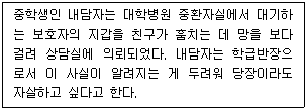
- 내담자가 자살방지 서약서를 작성했는지를 확인했는가?
- 내담자의 자살시도 이력에 대한 탐색을 확인했는가?
- 내담자의 구체적인 자살계획에 대한 탐색을 확인했는가?
- 내담자의 자살 보호요인으로 가족관계 탐색을 확인했는가?
- 내담자의 범죄가 어떻게 발각되었는지 확인했는가?
(정답률: 알수없음)
10. 집단수퍼비전의 단계에 관한 설명으로 옳지 않은 것은?
- 형성단계 - 수련생들이 누구인지, 서로 어떻게 관계를 이룰지 탐색하는 단계이다.
- 규범단계 - 집단 운영을 위한 규칙 설정이 중요한 단계이다.
- 혼란단계 - 집단의 현실성, 집단작업, 성취해야 할 과제에 대해 수련생의 역할 등을 다루는 단계이다.
- 수행단계 - 집단응집력이 증가되어 이전 단계보다 더 많은 피드백이 일어나는 반면 수퍼바이저 반응은 감소할 수 있다.
- 종결단계 - 집단경험을 정리하고, 집단에 대한 평가와 함께 개인적 유익이 통합되는 단계이다.
(정답률: 알수없음)
11. 수퍼비전의 목표에 관한 설명으로 옳지 않은 것은?
- 목표는 수퍼바이저의 이론적 배경에 따라 조금씩 달라지기도 한다.
- 구체적인 목표는 수퍼바이저와 수련생이 합의하여 정하게 된다.
- 수퍼비전에 대한 수련생의 기대나 동기는 수퍼비전 목표와 진행, 성과에 영향을 미치지 않는다.
- 단기목표는 수련생의 능력향상이나 기술증진 등 상담수행을 돕는 것이다.
- 장기목표는 상담장면에서 지혜를 획득하며 자율적이고 성숙한 상담자가 되는 것이다.
(정답률: 알수없음)
12. 수퍼비전 이론에서 통합적 지식, 해체이론, 권력, 기관에 관한 내용을 강조하는 접근은?
- 정신분석과 분석심리 접근
- 행동주의와 인지치료 접근
- 경험주의와 인간중심 접근
- 내러티브 모델과 여성주의 모델 접근
- 전략적 접근과 구조주의 접근
(정답률: 알수없음)
13. 키치너(K. Kitchener)가 제시한 상담자의 주요 윤리 원칙을 모두 고른 것은?
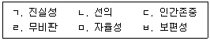
- ㄱ, ㄴ, ㅁ
- ㄱ, ㄷ, ㅂ
- ㄴ, ㄹ, ㅂ
- ㄷ, ㄹ, ㅁ
- ㄹ, ㅁ, ㅂ
(정답률: 알수없음)
14. 수퍼비전 모델에 관한 설명으로 옳지 않은 것은?
- 평형과정 모델: 수퍼비전에서 일어나는 역동을 상담장면에서 일어나는 역동의 반복으로 보았다.
- 작업동맹 모델: 정서적 유대, 목표에 대한 합의, 과제에 대한 합의로 설명한다.
- 인간중심 모델: 수련생의 잠재력에 대한 믿음을 강조한다.
- 인지-행동주의 모델: 학습이론의 원칙들을 수퍼비전의 전략으로 사용한다.
- 심리역동적 모델: 궁극적인 목표는 수련생의 기능적 사고 증진에 있다.
(정답률: 알수없음)
15. 다음은 수퍼바이저가 수련생의 어떤 역량을 평가하기 위한 것인가?
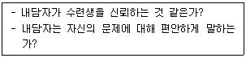
- 내담자 평가와 사례 개념화
- 치료계획
- 다문화적 역량
- 치료적 관계 발달
- 전문적ㆍ법적ㆍ윤리적 행동
(정답률: 알수없음)
16. 다음 위기상황을 보고한 수련생에 대해 수퍼바이저가 취해야 할 행동으로 옳지 않은 것은?
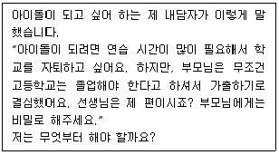
- 내담자의 이전 가출 경험에 대해 살펴보게 한다.
- 부모님과 내담자 간의 의사소통 방식을 확인하게 한다.
- 내담자의 학교생활에 대해 탐색하게 한다.
- 가출 후 계획에 대해 탐색하게 한다.
- 부모님이 내담자를 지지하도록 설득할 수 있는 방법을 찾아보게 한다.
(정답률: 알수없음)
17. 해결중심 수퍼비전에 관한 설명으로 옳은 것을 모두 고른 것은?
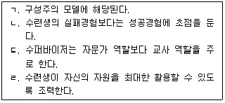
- ㄱ, ㄷ
- ㄴ, ㄹ
- ㄱ, ㄴ, ㄹ
- ㄴ, ㄷ, ㄹ
- ㄱ, ㄴ, ㄷ, ㄹ
(정답률: 알수없음)
18. 수퍼비전 평가에 관한 설명으로 옳지 않은 것은?
- 오리엔테이션 시 평가에 대한 준거와 과정을 분명히 하는 것이 좋다.
- 형성평가는 수퍼비전이 종결되는 시점에서 한다.
- 평가를 위한 피드백은 상호적이며 지속적이어야 한다.
- 종합평가는 수퍼바이저와 수련생 간 갈등을 일으키기도 한다.
- 개선되어야 할 부분에서 직면적 개입을 활용할 수 있다.
(정답률: 알수없음)
19. 체계적 접근 모델(SAS)의 '수퍼비전 관계'의 단계에 관한 설명으로 옳은 것은?
- 발달단계에서 수퍼바이저는 교육적 개입을 통해 수련생을 지지한다.
- 발달단계에서 수련생은 수퍼바이저에 대한 의존도가 낮고, 상호 힘의 지배구조가 역전된다.
- 성숙단계에서 수련생은 독립적으로 수퍼비전을 수행하게 된다.
- 성숙단계에서 수퍼비전 계약을 수립한다.
- 종결단계에서 수퍼비전의 목적과 관계에 대한 기대를 탐색한다.
(정답률: 알수없음)
20. 다음의 사례를 버나드(J. Bernard)의 변별 모델을 근거로 할 경우 수퍼바이저의 역할과 내용의 연결로 옳은 것은?
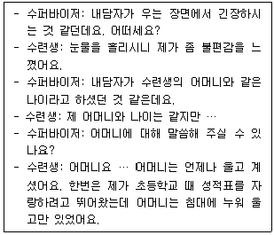
- 교사 – 상담과정기술
- 상담사 – 개인화
- 자문가 - 개인화
- 교사 – 사례개념화
- 상담사 - 상담과정기술
(정답률: 알수없음)
21. 헤스(A. Hess)의 발달적 수퍼비전 모델에 관한 설명으로 옳은 것은?
- 초기단계에서 수퍼바이저는 수련생의 성과를 통해 만족감과 자긍심을 느낀다.
- 초기단계에서 수퍼바이저는 수퍼바이저로서 정체성을 확립하게 된다.
- 탐색단계에서 수퍼바이저는 초기단계보다 수련생과 더 동일시하는 경향이 있다.
- 정체성 확립단계에서 수퍼바이저는 수련생과 인지적 수준의 관계에서 벗어나 전인적 수준의 관계로 발전할 수 있다.
- 정체성 확립단계에서 수련생의 저항이 더 커질 수 있다.
(정답률: 알수없음)
22. 다음이 설명하고 있는 수퍼비전 모델은?
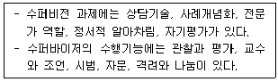
- 홀로웨이(E. Holloway)의 체계적 접근 모델
- 스톨튼버그(C. Stoltenberg)의 통합 발달 모델
- 힐(C. Hill)의 상담학생 모델
- 버나드(J. Bernard)의 변별 모델
- 프라울리-오디아(M. Frawley-O'Dea)의 관계 모델
(정답률: 알수없음)
23. 다음에서 알 수 있는 수퍼비전의 이론적 배경은?
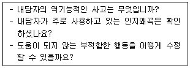
- 인간중심 이론
- 정신분석 이론
- 실존주의 이론
- 인지-행동주의 이론
- 게슈탈트 이론
(정답률: 알수없음)
24. 스톨튼버그(C. Stoltenberg)와 델워스(U. Delworth)의 통합 발달 모델에서 상담자 발달을 설명하는 요소를 모두 옳게 나열한 것은?
- 동기, 자율성, 자기-타인 인식
- 동기, 자기 수용, 통제
- 동기, 효능감, 통제
- 자율성, 자기 수용, 효능감
- 자율성, 통제, 자기-타인 인식
(정답률: 알수없음)
25. 로네스타드(M. Rønnestad)와 스코볼트(T. Skovholt)의 수퍼비전 발달 모델에 관한 설명으로 옳지 않은 것은?
- 상담자가 일생동안 발달하는 방법을 제시하고 있다.
- 대학원 초기 단계에서는 수퍼바이저나 내담자로부터 부정적인 피드백을 받을 경우 자신감이 떨어지고 위축되기 쉽다.
- 숙련된 전문가 단계는 이 모델의 마지막 단계이다.
- 대학원 후기 단계에서는 수퍼비전을 제공하면서 자신의 학습을 강화할 수 있다.
- 전생애에 걸친 개인적 삶은 전문가로서의 기능과 발달에 중요한 영향을 미친다.
(정답률: 알수없음)
2과목: 청소년 관련 법과 행정
26. 청소년 기본법상 기본이념을 구현하기 위한 장기적ㆍ종합적 청소년정책의 추진방향에 포함되지 않는 것은?
- 청소년의 참여 보장
- 청소년의 성장 여건과 사회 환경의 개선
- 청소년보호의 지원적ㆍ독립적 청소년정책으로의 전환
- 창의성과 자율성을 바탕으로 한 청소년의 능동적 삶의 실현
- 민주ㆍ복지ㆍ통일조국에 대비하는 청소년의 자질향상
(정답률: 알수없음)
27. 소년법상 소년부 보호사건으로 심리하는 대상이 아닌 것은?
- 죄를 범한 소년
- 형벌 법령에 저촉되는 행위를 한 10세 이상 20세 미만인 소년
- 집단적으로 몰려다니며 주위 사람들에게 불안감을 조성하는 성벽(性癖)이 있고 형벌 법령에 저촉되는 행위를 할 우려가 있는 10세 이상인 소년
- 정당한 이유 없이 가출하고 형벌 법령에 저촉되는 행위를 할 우려가 있는 10세 이상인 소년
- 술을 마시고 소란을 피우거나 유해환경에 접하는 성벽이 있으며 형벌 법령에 저촉되는 행위를 할 우려가 있는 10세 이상인 소년
(정답률: 알수없음)
28. 청소년 기본법령상 청소년특별회의에 관한 설명으로 옳지 않은 것은?
- 청소년 분야의 전문가와 청소년이 참여하는 회의로 해마다 개최하여야 한다.
- 참석대상ㆍ운영방법 등 세부적 사항은 여성가족부령으로 정한다.
- 청소년 관련 기관ㆍ단체에서 추천하는 청소년이 참여할 수 있다.
- 여성가족부장관은 참석대상을 정할 때에는 성별ㆍ연령별ㆍ지역별로 각각 전체 청소년을 대표할 수 있도록 노력하여야 한다.
- 청소년 관련 토론회 및 문화예술행사 등과 병행할 수 있다.
(정답률: 알수없음)
29. 청소년자기도전포상제에 관한 설명으로 옳지 않은 것은?
- 만 7~15세 청소년 또는 초등학교 1학년~중학교 3학년이면 누구나 참여할 수 있다.
- 청소년이 스스로 정한 목표를 성취해가며 숨겨진 끼를 발견하고 꿈을 찾아 갈 수 있도록 돕는 활동이다.
- 봉사, 자기개발, 신체단련, 탐험 4가지 활동영역으로 구성되어 있다.
- 포상단계는 동장, 은장, 금장으로 구성되어 있다.
- 영국에서 시작된 것으로 포상활동별 최소 활동기간 없이 자유롭게 참여할 수 있다.
(정답률: 알수없음)
30. 청소년활동 진흥법령상 숙박형등 청소년수련활동 계획의 신고가 수리된 자가 모집활동 및 계약을 할 경우 표시하고 고지해야 할 사항을 모두 고른 것은?
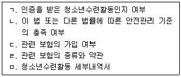
- ㄱ, ㄴ, ㄹ
- ㄴ, ㄷ, ㅁ
- ㄷ, ㄹ, ㅁ
- ㄱ, ㄴ, ㄷ, ㄹ
- ㄱ, ㄴ, ㄷ, ㄹ, ㅁ
(정답률: 알수없음)
31. 청소년활동 진흥법령상 수련활동의 인증을 받으려는 자는 인증위원회에 참가자 모집 또는 활동실시 시작 며칠 이전에 인증을 요청하여야 하는가?
- 45일
- 50일
- 55일
- 60일
- 90일
(정답률: 알수없음)
32. 소년법상 소년부 판사는 사건을 조사 또는 심리하는 데에 필요하다고 인정하면 소년의 감호에 관한 결정으로 위탁조치를 할 수 있다. 그 중 위탁기간이 3개월까지 가능한 자 또는 시설을 모두 고른 것은?
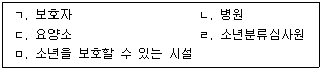
- ㄱ, ㄴ, ㄹ
- ㄱ, ㄷ, ㄹ
- ㄴ, ㄷ, ㅁ
- ㄱ, ㄴ, ㄷ, ㅁ
- ㄴ, ㄷ, ㄹ, ㅁ
(정답률: 알수없음)
33. 청소년복지 지원법상 ( )에 공통으로 들어갈 숫자는?
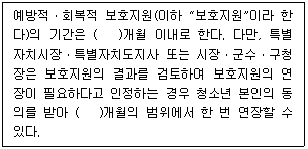
- 1
- 3
- 6
- 9
- 12
(정답률: 알수없음)
34. 청소년활동 진흥법령상 청소년운영위원회에 관한 설명으로 옳지 않은 것은?
- 위원의 임기는 2년으로 한다.
- 10명 이상 20명 이하의 청소년으로 구성하여야 한다.
- 청소년수련시설을 설치ㆍ운영하는 같은 법 제16조제3항에 따른 위탁운영단체(이하 “수련시설 운영단체”라 한다)는 청소년활동을 활성화하고 청소년의 참여를 보장하기 위하여 운영하여야 한다.
- 수련시설운영단체의 대표자는 청소년운영위원회의 의견을 수련시설 운영에 반영하여야 한다.
- 구성ㆍ운영 등에 필요한 사항은 대통령령으로 정한다.
(정답률: 알수없음)
35. 0세(임산부)부터 만 12세(초등학교 6학년 이하)의 취약계층 아동 및 가족에게 공평한 출발기회를 보장하고, 빈곤의 대물림을 차단할 목적으로 하는 사업은?
- 청소년방과후아카데미
- 지역아동센터
- 드림스타트
- 디딤씨앗통장
- 그룹홈
(정답률: 알수없음)
36. 청소년 기본법령상 청소년육성 전담공무원에 관한 설명으로 옳지 않은 것은?
- 청소년지도사 또는 청소년상담사의 자격을 가진 사람으로 한다.
- 관할구역의 청소년과 청소년지도자 등에 대하여 그 실태를 파악하고 필요한 지도를 하여야 한다.
- 청소년육성 전담공무원의 임용 등에 필요한 사항은 조례로 정한다.
- 시ㆍ도 및 시ㆍ군ㆍ구에는 청소년육성에 관한 업무를 전담하는 기구를 따로 설치할 수 없다.
- 읍ㆍ면ㆍ동에 청소년육성 전담공무원을 둘 수 있다.
(정답률: 알수없음)
37. 청소년활동 진흥법상 '비숙박형 청소년수련활동'의 정의이다. ( )에 들어갈 알맞은 숫자는?
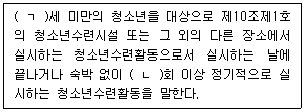
- ㄱ: 14, ㄴ: 3
- ㄱ: 16, ㄴ: 3
- ㄱ: 17, ㄴ: 2
- ㄱ: 18, ㄴ: 2
- ㄱ: 19, ㄴ: 2
(정답률: 알수없음)
38. 청소년 보호법령상 청소년고용금지업소가 아닌 곳은?
- 일반게임제공업
- 단란주점영업
- 유흥주점영업
- 청소년실이 없는 노래연습장업
- 농어촌정비법을 적용받는 숙박시설에 의한 숙박업
(정답률: 알수없음)
39. 청소년복지 지원법상 국가 및 지방자치단체는 위기청소년에게 필요한 사회적ㆍ경제적 지원(이하 “특별지원”이라 한다)을 할 수 있다. 이에 관한 설명으로 옳지 않은 것은?
- 특별지원의 내용은 대통령령으로 정한다.
- 특별지원에는 생활지원, 학업지원, 의료지원 등이 있다.
- 직업훈련지원은 특별지원의 내용이 아니다.
- 물품 또는 서비스의 형태로 제공한다.
- 반드시 필요하다고 인정되는 경우에는 금전의 형태로 제공할 수 있다.
(정답률: 알수없음)
40. 다음 ( )에 들어갈 알맞은 내용은?
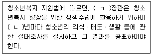
- ㄱ: 여성가족부, ㄴ: 3
- ㄱ: 여성가족부, ㄴ: 4
- ㄱ: 여성가족부, ㄴ: 5
- ㄱ: 교육부, ㄴ: 3
- ㄱ: 교육부, ㄴ: 4
(정답률: 알수없음)
41. 청소년복지 지원법령상 지역사회 청소년통합지원체계에 반드시 포함되어야 하는 필수연계기관이 아닌 곳은?
- 청소년 지원시설
- 지방자치단체
- 보건소
- 공공도서관
- 보호관찰소
(정답률: 알수없음)
42. 청소년 보호법령상 청소년 출입ㆍ고용금지업소의 업주와 종사자가 청소년이 그 업소에 출입하지 못하도록 반드시 확인해야 하는 것은?
- 성별
- 나이
- 학생 여부
- 직업
- 거주지
(정답률: 알수없음)
43. 아동ㆍ청소년의 성보호에 관한 법률상 아동ㆍ청소년의 성을 사는 행위를 한 자에 대한 명시된 징역형 처벌기준은?
- 1년 이상 3년 이하
- 1년 이상 5년 이하
- 1년 이상 10년 이하
- 3년 이상 5년 이하
- 3년 이상 10년 이하
(정답률: 알수없음)
44. 학교폭력예방 및 대책에 관한 법률상 학교폭력대책심의위원회가 교육장에게 피해학생에 대하여 조치할 것을 요청할 수 있는 것을 모두 고른 것은?
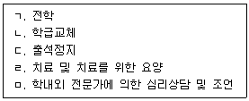
- ㄱ, ㄴ, ㄷ
- ㄱ, ㄴ, ㄹ
- ㄴ, ㄹ, ㅁ
- ㄱ, ㄷ, ㄹ, ㅁ
- ㄴ, ㄷ, ㄹ, ㅁ
(정답률: 알수없음)
45. 학교 밖 청소년 지원에 관한 법률상 '학교 밖 청소년 지원센터'의 업무가 아닌 것은?
- 학교 밖 청소년 지원을 위한 지역사회 자원의 발굴 및 연계ㆍ협력
- 학교 밖 청소년 지원 위원회의 구성 및 운영
- 학교 밖 청소년 지원 프로그램의 개발 및 보급
- 학교 밖 청소년 지원 프로그램에 대한 정보제공 및 홍보
- 학교 밖 청소년에 대한 사회적 인식 개선
(정답률: 알수없음)
46. 학교폭력예방 및 대책에 관한 법률상 학교폭력의 예방 및 대책에 관한 기본계획의 설명으로 옳지 않은 것은?
- 3년마다 수립하여야 한다.
- 교육부장관은 관계 중앙행정기관 등의 의견을 수렴하여야 한다.
- 피해학생에 대한 치료ㆍ재활 등의 지원을 포함해야 한다.
- 학교폭력 관련 행정기관 및 교육기관 상호 간의 협조ㆍ지원을 포함해야 한다.
- 전문상담교사의 배치 및 이에 대한 행정적ㆍ재정적 지원을 포함해야 한다.
(정답률: 알수없음)
47. 학교 밖 청소년 지원에 관한 법률상 국가와 지방자치단체가 학교 밖 청소년이 학업에 복귀하고 자립할 수 있도록 지원할 수 있는 '교육지원'이 아닌 것은?
- 「초ㆍ중등교육법」제2조의 초등학교로의 취학
- 「초ㆍ중등교육법」제2조의 중학교로의 재취학
- 「초ㆍ중등교육법」제2조의 고등학교로의 재입학
- 「초ㆍ중등교육법」제60조의3의 대안학교로의 진학
- 「초ㆍ중등교육법」제27조의2에 따라 고등학교를 졸업한 사람과 동등한 학력이 인정되는 시험의 준비
(정답률: 알수없음)
48. 청소년헌장에서 청소년의 권리중 “청소년은 자신의 삶과 관련된 ( ㄱ )에 민주적 절차에 따라 ( ㄴ )를 가진다.”에서 ( )에 들어갈 알맞은 내용은?
- ㄱ: 개인문제, ㄴ: 표현의 자유
- ㄱ: 사회문제, ㄴ: 표현의 자유
- ㄱ: 사회문제, ㄴ: 참여할 권리
- ㄱ: 정책결정과정, ㄴ: 표현의 자유
- ㄱ: 정책결정과정, ㄴ: 참여할 권리
(정답률: 알수없음)
49. 제6차 청소년정책기본계획(2018년~2022년)의 비전으로 옳은 것을 모두 고른 것은?
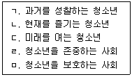
- ㄱ, ㄴ, ㄷ
- ㄱ, ㄹ, ㅁ
- ㄴ, ㄷ, ㄹ
- ㄱ, ㄴ, ㄷ, ㄹ
- ㄴ, ㄷ, ㄹ, ㅁ
(정답률: 알수없음)
50. 시ㆍ도 청소년상담복지센터의 주요 업무가 아닌 것은?
- 청소년상담사 자격관리
- 청소년전화 1388 운영
- 지역사회 청소년통합지원체계 운영
- 청소년동반자 운영
- 긴급구조 및 일시보호사업
(정답률: 알수없음)
3과목: 상담연구방법론의 실제
51. 회귀분석 시 결정계수 R2에 관한 설명으로 옳지 않은 것은?
- R2 = 회귀제곱합(SSR)/총제곱합(SST) 이다.
- 잔차제곱합(SSE)이 작아지면 R2은 커진다.
- R2은 독립변수가 늘어날수록 증가하는 경향이 있다.
- 모든 측정값이 추정된 회귀선 상에 있는 경우 R2은 1이다.
- R2은 -1에서 +1까지의 값을 갖는다.
(정답률: 알수없음)
52. 다음 그림은 학군(school district)과 부모소득이 학업의지에 미치는 영향을 예측하는 경로분석 결과이다. 학업의지에 대한 학군의 총효과(ㄱ)와 부모소득이 학업효능감을 거쳐 학업의지에 미치는 간접효과(ㄴ)는? (단, 경로계수는 모두 표준화 회귀계수이며, 유의수준은 =.⑤ 임)
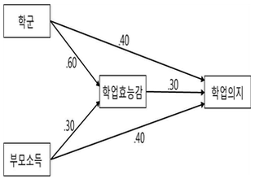
- ㄱ: 0.09, ㄴ: 0.58
- ㄱ: 0.18, ㄴ: 0.09
- ㄱ: 0.49, ㄴ: 0.06
- ㄱ: 0.58, ㄴ: 0.09
- ㄱ: 0.58, ㄴ: 0.49
(정답률: 알수없음)
53. 모의상담(analogue counseling)연구에 관한 설명으로 옳지 않은 것은?
- 실제 상담현상을 축소하여 가설ㆍ이론ㆍ법칙을 단순화한다.
- 연구의 내적타당도가 낮다.
- 상담연구에서의 윤리적인 문제를 줄일 수 있다.
- 연구자의 의도대로 상담과정을 조작할 수 있다.
- 가외변수의 영향을 통제할 수 있다.
(정답률: 알수없음)
54. 통계적 가설에 관한 설명으로 옳은 것을 모두 고른 것은?
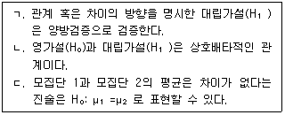
- ㄱ
- ㄴ
- ㄱ, ㄷ
- ㄴ, ㄷ
- ㄱ, ㄴ, ㄷ
(정답률: 알수없음)
55. 조작적 정의에 관한 설명으로 옳은 것을 모두 고른 것은?
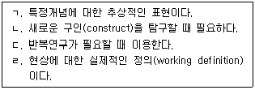
- ㄱ, ㄴ
- ㄴ, ㄷ
- ㄷ, ㄹ
- ㄴ, ㄷ, ㄹ
- ㄱ, ㄴ, ㄷ, ㄹ
(정답률: 알수없음)
56. 질적연구에서 신뢰도(reliability)를 확보하기 위한 방안으로 옳지 않은 것은?
- 최소한의 자료와 단일한 방법을 활용한다.
- 참여자에게 연구관련 정보를 충분히 제공한다.
- 설계부터 수행, 관리까지 투명하게 밝힌다.
- 기본가정, 관점, 사회역사적 맥락 등을 충분히 설명한다.
- 감사추적(audit trail)기록을 작성한다.
(정답률: 알수없음)
57. 연구윤리에 관한 설명으로 옳지 않은 것은?
- 통계 결과값을 연구 목적에 따라 임의로 변경하여 제시한다.
- 연구자는 자료 수집 전에 연구 참여의 이득과 위험을 고지한다.
- 연구대상이 원하면 연구 참여를 중단할 수 있다.
- IRB(Institutional Review Board)는 연구계획서를 바탕으로 연구진행과정의 연구윤리문제 발생가능성을 평가한다.
- 연구자는 선입견, 예측, 사적 욕구에 이끌리지 않고 결과를 정직하게 보고한다.
(정답률: 알수없음)
58. 다음은 4가지 상담프로그램 효과를 비교한 무선배치 분산분석표이다. 집단마다 피험자를 5명씩 할당했을 때 ( )에 들어갈 값은? (단, 모든 계산수치는 소수점 첫째자리에서 반올림하여 구한다.)
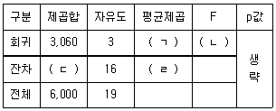
- ㄱ: 184 ㄴ: 6 ㄷ: 1,020 ㄹ: 2,940
- ㄱ: 1,020 ㄴ: 6 ㄷ: 2,940 ㄹ: 184
- ㄱ: 1,020 ㄴ: 184 ㄷ: 2,940 ㄹ: 6
- ㄱ: 2,940 ㄴ: 6 ㄷ: 1,020 ㄹ: 184
- ㄱ: 2,940 ㄴ: 1,020 ㄷ: 184 ㄹ: 6
(정답률: 알수없음)
59. 다음 사례에서 설명하고 있는 표집방법은?
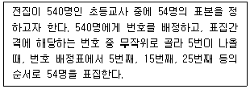
- 눈덩이표집(snowball sampling)
- 체계적표집(systematic sampling)
- 층화표집(stratified sampling)
- 집락표집(cluster sampling)
- 판단표집(judgement sampling)
(정답률: 알수없음)
60. 다음 사례의 타당도 위협요인은?
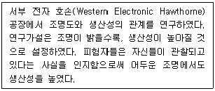
- 사전검사에 대한 반응효과
- 플라시보 효과
- 통계적 회귀현상
- 편향된 표본선정
- 실험처치(개입)에 대한 반응효과
(정답률: 알수없음)
61. 질적연구 방법에 관한 설명으로 옳은 것을 모두 고른 것은?
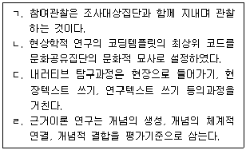
- ㄱ, ㄴ
- ㄴ, ㄷ
- ㄷ, ㄹ
- ㄱ, ㄷ, ㄹ
- ㄴ, ㄷ, ㄹ
(정답률: 알수없음)
62. 다음 연구설계에 관한 설명으로 옳지 않은 것은?
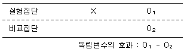
- 집단 간 처치효과에 대한 인과관계를 정확히 파악할 수 있다.
- 간편하고 시간과 비용이 절감되어 사회과학 조사에서 활용되고 있다.
- 다양한 외생변수가 개입될 여지가 있다.
- 두 집단 자체의 차이가 통제되지 않는다.
- 집단 구성에 있어 연구자의 선택적 편의가 발생할 수 있다.
(정답률: 알수없음)
63. 상담연구에 관한 설명으로 옳지 않은 것은?
- 표현된 구체적 행동증거와 자기보고 및 타인보고에 의한 증거를 수집하는 것이 좋다.
- 과학적 연구로서 반복검증이 필요하다.
- 구성주의 내러티브 연구는 수집한 자료가 자신의 예측과 부합하는지를 검증한다.
- 구성주의는 사례연구, 해석, 재구성 등에 초점을 둔다.
- 상담효과의 객관적인 연구결과를 현장에 적극 활용한다.
(정답률: 알수없음)
64. 청소년상담사 150명의 변수 측정 결과이다. 이를 기반으로 평균(ㄱ), 중앙값(ㄴ), 분산 (ㄷ)을 구한 값은?
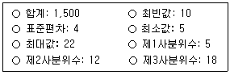
- ㄱ: 5, ㄴ: 12, ㄷ: 12
- ㄱ: 10, ㄴ: 12, ㄷ: 16
- ㄱ: 10, ㄴ: 16, ㄷ: 12
- ㄱ: 10, ㄴ: 18, ㄷ: 16
- ㄱ: 22, ㄴ: 16, ㄷ: 10
(정답률: 알수없음)
65. 다음 절차에 해당하는 설계방법은?
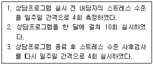
- 혼합설계
- 시계열설계
- 교차설계
- 역균형설계
- 솔로몬 4집단설계
(정답률: 알수없음)
66. 다음 방법으로 확인할 수 있는 측정도구의 타당도는?
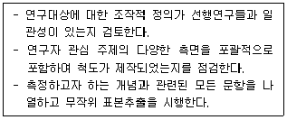
- 판별타당도
- 예측타당도
- 내용타당도
- 구인타당도
- 공인타당도
(정답률: 알수없음)
67. 측정도구의 신뢰성을 높이기 위한 방안이 아닌 것은?
- 동일현상을 측정하는 항목의 문항을 늘린다.
- 문항의 모호한 표현을 제거한다.
- 중요한 질문의 경우 유사한 질문을 2회 이상 제시한다.
- 응답자의 상황에 따라 조사자의 면접방식과 태도를 변경하여 실시한다.
- 측정에 대한 세부지침서를 조사 대상자에게 제공한다.
(정답률: 알수없음)
68. 실험설계의 타당성을 저해하는 요인을 모두 고른 것은?
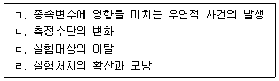
- ㄱ, ㄷ
- ㄴ, ㄹ
- ㄱ, ㄴ, ㄷ
- ㄴ, ㄷ, ㄹ
- ㄱ, ㄴ, ㄷ, ㄹ
(정답률: 알수없음)
69. 일원공분산분석(one-way ANCOVA)에 관한 설명으로 옳지 않은 것은?
- 공변수(covariate)가 종속변수에 미치는 영향을 통계적으로 통제한 후 독립변수가 종속변수에 미치는 영향을 분석한다.
- 집단 내에서의 종속변수에 대한 공변수의 회귀계수가 집단 간에 동일하다는 가정을 충족해야 한다.
- 공변수와 종속변수 간의 집단 내 상관계수 절댓값이 작을수록 오차분산이 줄어들어 통계적 검증력이 높아진다.
- 공변수에 대한 자료는 실험 전에 수집하는 것을 전제한다.
- 회귀분석과 분산분석이 혼합된 모형으로 볼 수 있다.
(정답률: 알수없음)
70. 다음 설명에 해당하는 설계방법은?
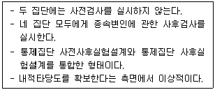
- 솔로몬 4집단설계
- 통제집단 사후실험설계
- 시계열설계
- 비동등 통제집단설계
- 단일집단 사전사후설계
(정답률: 알수없음)
71. 다음 표는 남학생과 여학생 간의 선호하는 상담프로그램의 차이를 보여주는 자료이다. A 프로그램을 선호하는 여학생의 기대빈도수는?
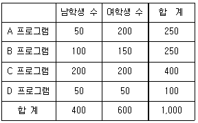
- 0.25
- 33
- 150
- 200
- 330
(정답률: 알수없음)
72. 다음 두 사례에서 설명하고 있는 실험적 통제전략은?
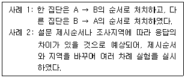
- 상쇄
- 무작위화
- 제거
- 균형화
- 표본의 편중
(정답률: 알수없음)
73. 요인분석(factor analysis)에 관한 설명으로 옳지 않은 것은?
- 회귀분석이나 판별분석의 예비단계로 활용할 수 있다.
- 요인적재량은 각 변수와 요인 사이의 상관관계 정도를 의미한다.
- 요인들 간의 관계가 완전히 독립적이지 못한 경우에는 사각회전(oblique rotation) 방식이 적절하다.
- 고유치(eigenvalue)는 각 요인별로 모든 변수의 요인적재량을 제곱하여 더한 값이다.
- 요인추출 모델 가운데 주성분분석(PCA)은 자료의 공통분산만을 이용한다.
(정답률: 알수없음)
74. 서스톤(Thurstone) 척도에 관한 설명으로 옳은 것은?
- 사회적 거리감의 정도를 측정하기 위해 연속적인 문항들을 활용한다.
- 평정자가 진술문 간의 등간성을 판단할 수 있다는 것을 전제로 한다.
- 개발과정이 단순하여 시간과 노력이 적게 든다.
- 양극의 뜻을 갖고 대비되는 형용사들로 의미를 측정하는 방법이다.
- 집단 내의 커뮤니케이션 및 상호작용 패턴에 관한 자료를 수집하고 분석한다.
(정답률: 알수없음)
75. 다음 내용에 해당하는 혼합연구방법론(mixed method research)의 혼합연구설계 유형은?
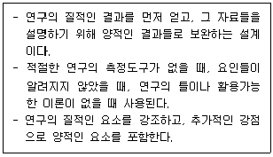
- 삼각검증설계(triangulation design)
- 내장형설계(embedded design)
- 설명적설계(explanatory design)
- 탐색적설계(exploratory design)
- 동류집단설계(cohort design)
(정답률: 알수없음)